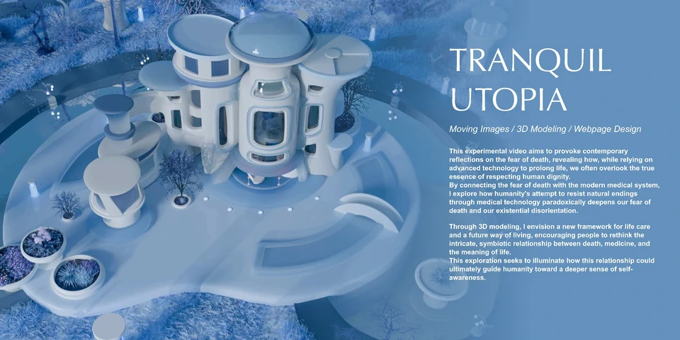
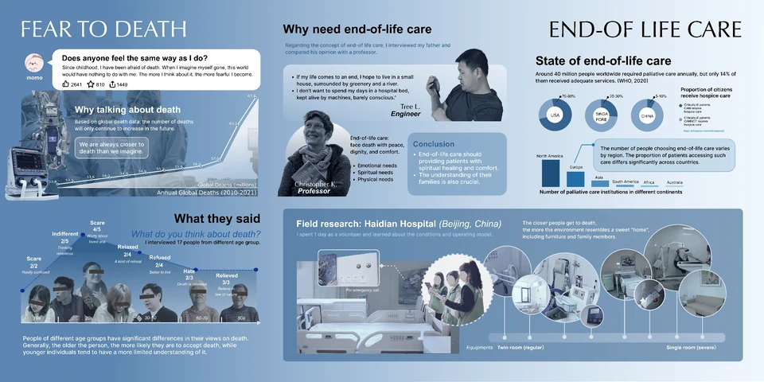
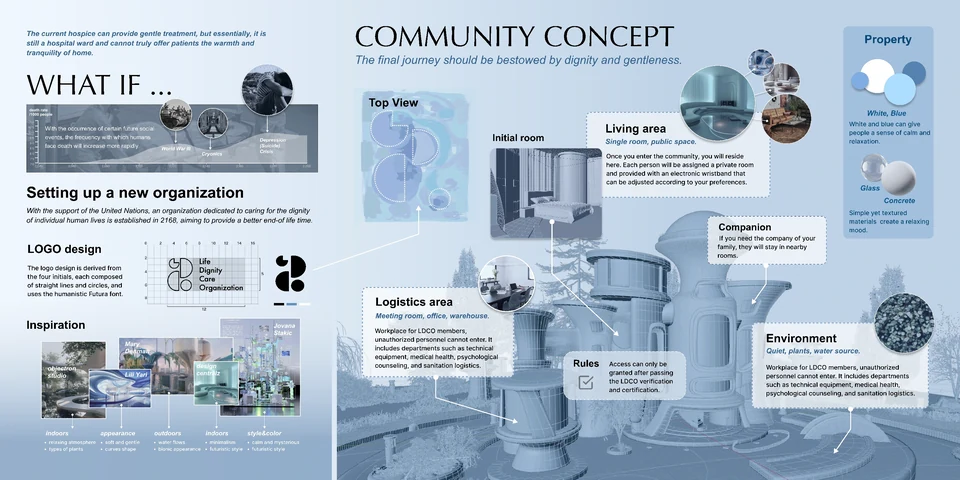
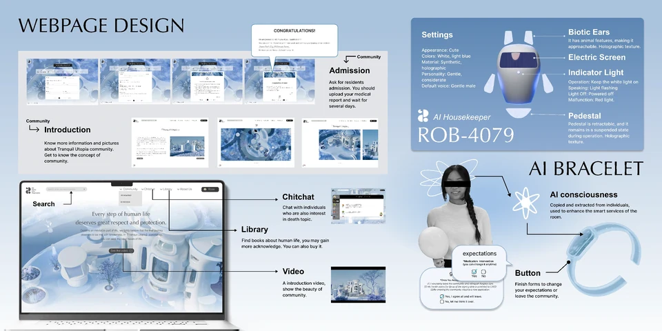
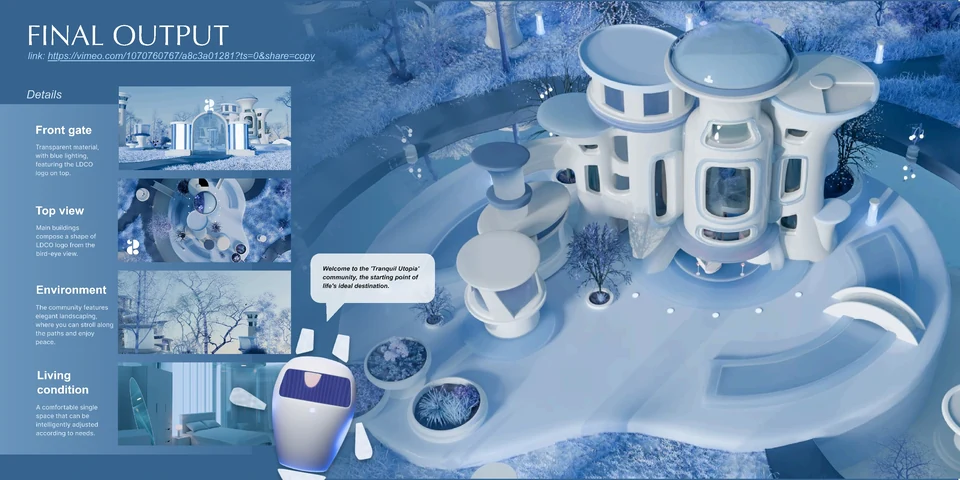

DIGITAL & NEW MEDIA / 2025.03
Tranquil Utopia（宁静乌托邦）
《宁静乌托邦》从对死亡的恐惧出发，探讨现代医疗技术、生命尊严与临终关怀之间的关系。项目关注一种矛盾：当人们借助技术不断延长生命、抵抗自然终点时，是否也加深了对死亡的恐惧与对生命意义的迷惘？设计通过虚构的未来社区与实验影像，邀请观众重新审视这一关系。
在项目设定中，LDCO 是一个关注生命尊严的未来组织。“宁静乌托邦”社区将个人居住空间、家属陪伴与服务设施组织在一起，以接近家的环境回应生命最后阶段的生活需求。这一设定属于概念叙事，并非现实机构或已建成的医疗项目。
左右拖动浏览图片
视觉设计以白色和浅蓝色为主，结合弧形建筑、环形水道、植物与柔和光线，营造宁静、轻盈的空间氛围。三维建模将社区入口、建筑群、景观和居住空间转化为可观看的场景，使抽象的照护愿景获得具体的空间形态。
设计还延伸至社区网页、AI 管家与智能手环等服务触点。网页承载社区介绍、申请入住、交流与阅读等内容；AI 管家 ROB-4079 与智能手环则作为概念中的陪伴和交互媒介。手环中的表单允许居民调整个人意愿或申请离开社区，将人的选择纳入对未来照护服务的思考。最终通过实验影像、三维场景和网页展示，邀请观众重新思考死亡、医疗技术与生命意义之间的关系。
左右拖动浏览图片




